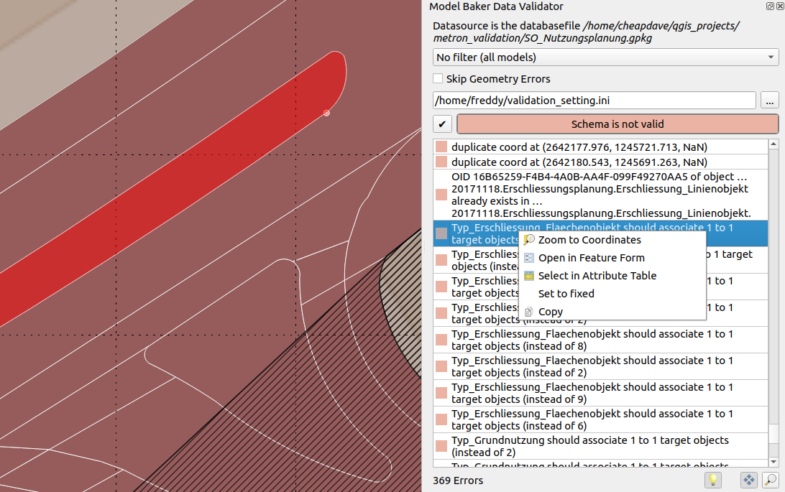
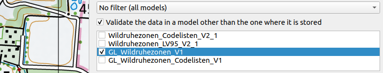
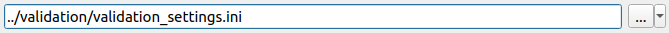

Validate Data
You can validate your physical data against the INTERLIS models directly in QGIS. Open the Model Baker Validator Panel by the menu Database > Model Baker > Data Validator or View > Panels > Model Baker Data Validator

Database
The database connection parameter are emitted from the currently selected layer. Mostly this is representative for the whole project, since mostly a project bases on one single database schema/file. In case of multiple used database sources, it's possible to switch between the validation results when switching the layers.
Filters
You can filter the data being validated either by models or - if the database considers Dataset and Basket Handling - by datasets or baskets. You can choose multiple models/datasets/baskets. But only one kind of filter (--model, --dataset, --basket) is given to the ili2db command (it would make no conjunction (AND) but a disjunction (OR) if multiple parameters are given (what is not really used). A conjunction can still be done by selecting the smallest instance (baskets)).
Validate in the base model
This is relevant if you use extended models: You have your data stored in your extended model, but might want to validate it in the format of the base model only.

Skip Geometry Errors
When the checkbox is activated, geometry errors are ignored and the validation of AREA topology is disabled. Errors like those will not be listed.
- Intersecting geometries
- Duplicate coordinates
- Overlaying geometries
Note
In the backend the parameters --skipGeometryErrors and --disableAreaValidation are set.
Verbose Mode

Activate verbose mode to get more (mostly technical) information in the error messages.
Configuration File
It's possible to enable/disable and name constraints of the current model via meta attributes. For the configuration of those, see the chapter Set Meta Attributes in the Config File below.
Add it to the validation by selecting it via file browser.

You can save this path to your project (to the project variables) with the  botton. Althoug it's saved relatively, it's passed to ili2db as an absolute path.
botton. Althoug it's saved relatively, it's passed to ili2db as an absolute path.
Note
You can also use a configuration file from the ilidata repositories. Just add the ilidata-key (like ilidata:<key>) as the path.
Results
After running the validation by pressing the the results are listed.
With right click on the error a menu is opened with the following options:
- Zoom to coordinates (if coordinates are provided) with an extend of 10 map units
- Open in Feature Form (if a stable t_ili_tid is available)
- Select in Attribute Table (if a stable t_ili_tid is available)
- Mark as fixed (marking the entry mark green and crossed over to have organize the fixing process)
- Copy (to copy the message text)
Automatic pan, zoom and highlight features or coordinates are performed by clicking on the result tables entry. On automatic pan and zoom, the coordinates are taken into account if they are provided by ili2db, if not, then the geometry of the feature (according to the OID provided by ili2db). On automatic zoom on the features geometry, it's extent is taken and on coordinates an extend of 10 map units instead.
Note
Since ili2db sometimes on non-geometry errors provides the coordinates as well, there could be a confusion when it zooms or pans to the coordinates there. Still it's preferable to not zoom or pan to the coordinates on geometry errors when they provide an OID. Currently the validator cannot make a difference between those error-types.
Using of Meta Attributes in the Validation
As well as configuring meta attributes used for the physical database implementation and for QGIS project generation, meta attributes can be used for additional configuration of the validation like e.g. disable specific checks generally or on specific objects as well as naming of the constraints.
Set Meta Attributes in the ILI File
See this example:
[...]
CLASS Resident =
!!a mandatory constraint that is deactivated
!!@ ilivalid.multiplicity = off
ID: MANDATORY TEXT;
Name: TEXT;
IsHuman: BOOLEAN;
!!a logical constraint that is deactivated
!!@ ilivalid.check = off
SET CONSTRAINT WHERE IsHuman:
DEFINED(Name);
END Resident;
[...]
Neither the mandatory constraint on ID nor the logical constraint will not be considered in the validation.
As well you can override message / name of logical constraints:
[...]
!!@ name = MandatoryHumanName
!!@ ilivalid.msg = "When the resident {ID} is human, then it needs a name."
SET CONSTRAINT WHERE IsHuman:
DEFINED(Name);
[...]
Note
When the ilivalid.msg is defined, the name is not displayed in the Model Baker validator.
See all the possible meta attributes in the official documentation of ilivalidator.
Set Meta Attributes in the Config File
Since mostly the person validating the data is not the same than the person creating the model, there is the possiblity to pass meta attributes to the validation by an INI file.
Having the class in the INTERLIS model:
MODEL ModernCity_V1 (en) =
TOPIC Living =
CLASS Resident =
ID: MANDATORY TEXT;
Name: TEXT;
IsHuman: BOOLEAN;
SET CONSTRAINT WHERE IsHuman:
DEFINED(Name);
END Resident;
[...]
And the meta attribute from the example above in the configuration file:
["ModernCity_V1.Living.Resident.ID"]
# disable mandatory constraint of ID
multiplicity="off"
["ModernCity_V1.Living.Resident.Constraint1"]
# disable first logical constraint of class Resident
check="off"
Note
As well as setting them to off you can use on to reactivate the constraint (if disabled in the INTERLIS model) or use warning.
You can set the message of the constraints in the configuration file as well:
["ModernCity_V1.Living.Resident.Constraint1"]
msg = "When the resident {ID} is human, then it needs a name."
When you have a name set in the model, you can use it here:
["ModernCity_V1.Living.Resident.MandatoryHumanName"]
msg = "When the resident {ID} is human, then it needs a name."
Use the meta attributes listed here documentation of ilivalidator without the ilivalid. prefix.
Disable Checks generally in the Config File
Sometimes it can be helpfull to disable checks generally, to make seperate validations for each kind of check.
Use for that the "PARAMETER" section:
["PARAMETER"]
#deactivate full validation
#validation="off"
#deactivates mandatory constraints
multiplicity="off"
#deactivates logical constraints
constraintValidation="off"
See for all the global configurations the official documentation of ilivalidator.
Note
Validation with deactivated validation is useful because it checks if everything is ok with the technical aspects (like t_typ, t_id etc).
ili2db with --validate in the background
On running the validation ili2db is used in the background with the parameter --validate. This means no export of the data is needed. The output is parsed by Model Baker and provided in the result list.
Entries of the type Error and Warning are listed.
ili2db with --plugins in the background
In very special cases, ili2db plugins are used to validate with additional and non-native validation functions. If you have such plugins, you have to store them in your QGIS profile folder, next to the ili2db JAR file. E.g.:
...your-profile/python/plugins/QgisModelBaker/libs/modelbaker/iliwrapper/bin/ili2pg-5.4.0/